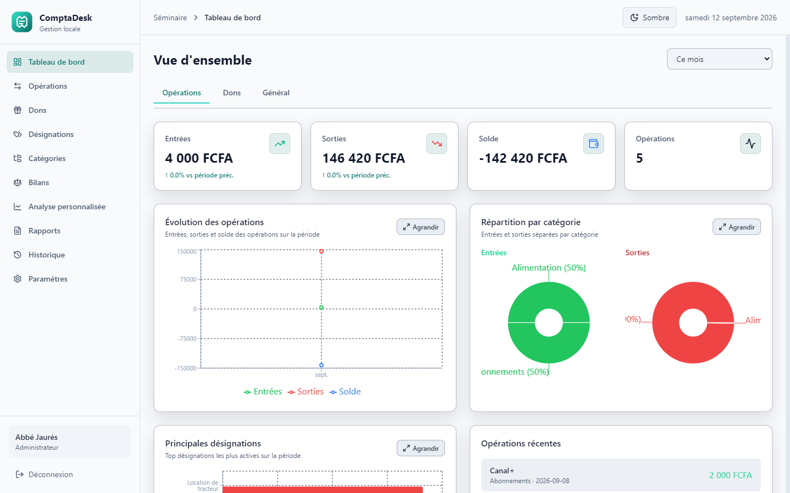

Application Windows gratuite
Vos chiffres, enfin en ordre.
Enregistrez les opérations, suivez les ressources, préparez les bilans et retrouvez chaque donnée depuis une application comptable locale.
- Installation locale
- Données sur votre ordinateur
- Sauvegarde intégrée
APERÇU
Tableau de bord
Novembre 2026
Flux financiers6 derniers mois
ActivitéRécent
- Dons reçusHier+125 000
- Fournitures15 nov.-48 500
- Adhésions12 nov.+75 000
Un écosystème complet
ComptaDesk accompagne
chaque usage.
WINDOWS
Application locale

ComptaDesk Desktop
Application complète pour Windows: opérations, dons, bilans, rapports, administration et sauvegardes.
Télécharger pour Windows ↗
NAVIGATEUR
Comptaflow Web

Comptaflow Web
Une interface accessible depuis le navigateur, pensée pour consulter et gérer les données avec une expérience moderne.
Découvrir les écrans ↗
ANDROID / iOS
Application mobile
09:41•••
CGo
Bonjour
Ce moisGénéral
AccueilModulesSync
CGo Mobile
Suivi comptable mobile, accès aux modules, synchronisation réseau et sauvegarde locale depuis Android ou iOS.
Application mobile CGoTout ce qu’il faut
Une comptabilité claire,
sans ajout inutile.
Opérations quotidiennes
Enregistrez les entrées et sorties avec catégories, désignations, dates et descriptions.
Bilans et analyses
Comparez les périodes, les catégories et les désignations pour voir rapidement où vont vos ressources.
Rapports prêts à partager
Exportez vos données en Excel et produisez des documents PDF pour vos réunions ou archives.
Contrôle des accès
Organisez les rôles et permissions pour limiter les opérations selon chaque utilisateur.
Captures réelles
Chaque écran,
en contexte.
Simple à démarrer
Votre dossier comptable sur ordinateur.
ComptaDesk conserve les données dans une base locale. Vous gardez le contrôle sur les sauvegardes, les utilisateurs autorisés et l’historique des opérations.
- 1Télécharger
Obtenez l’installateur Windows officiel.
- 2Installer
Suivez l’assistant et choisissez l’emplacement souhaité.
- 3Configurer
Créez vos catégories puis commencez à enregistrer.
ComptaDesk 1.0.3